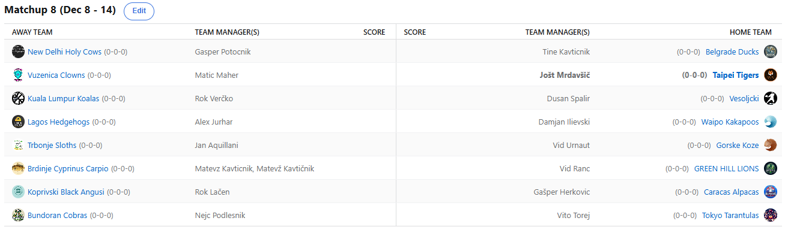

SEZONA 25/26
- Pravila in sistem tekmovanja
- Matchup1 (Oct 21 - Oct 26)
- Matchup2 (Oct 27 - Nov 2)
- Matchup3 (Nov 3 - Nov 9)
- Matchup4 (Nov 10 - Nov 16)
- Matchup5 (Nov 17 - Nov 23)
- Matchup6 (Nov 24 - Nov 30)
- Matchup7 (Dec 1 - Dec 7)
- Matchup8 (Dec 8 - Dec 14)
- Matchup9 (Dec 15 - Dec 21)
- Matchup10 (Dec 22 - Jan 28)
- Matchup11 (Dec 29 - Jan 4)
- Matchup12 (Jan 5 - Jan 11)
- Matchup13 (Jan 12 - Jan 18)
- Matchup14 (Jan 19 - Jan 25)
- Matchup15 (Jan 26 - Feb 1)
- Play-in (Feb 2 - Feb 22)
- Playoff 1 (Feb 23 - Mar 8)
- Playoff 2 (Mar 9 - Mar 22)
- Playoff 3 (Mar 23 - Apr 5)
2025/26 - Fantasy Koroška - sezona 9
MATCHUP 8 (Dec 8 - Dec 14)
Recap: MATCHUP 8
Teden številka »veš kje te nosam« je za nami in na žalost imamo še vedno enega neporaženega managerja.
Tale kaotičen teden in razpored, pripravljen na posebni šoli, je namreč znova izkoristil Cicko in zabeležil 8. zaporedno zmago.
To sicer še ni rekord za največ zaporednih zmag, je pa najboljši štart v sezono v zgodovini. Nekoliko žge dejstvo, da mu je to uspelo z
zmago s četrto najslabšim scorom, hkrati pa je to tretje najslabši score, ki je zadoščal za zmago v moderni zgodovini lige. Tako on kot
Vito dobesedno kraljujeta tudi na vrhu lestvice z najmanj points against …
tam izstopata s kar 600 manj »prejetimi točkami«. Dobra obramba al neki lol. No, Nejcu je do zmage nad velikim rivalom Toresom pomagal
kar Bub Carrington, ki je bil drugi igralec Ankaranske franšize. Enough said, naše misli in želje se selijo k Angusom.
Slednji so na boleč način zmago izgubili šele v nedeljskem programu, ko so jih za las ugnale Alpake. Malo lahko pohvalimo Herkona za lep stream D-Wada,
po drugi strani pa se mu je prikazala Marija s Champagnijem, a zmagi se ne gleda v zobe in Herko se je utrdil na četrtem mestu lestvice.
Naš Voky pa je, če drugega ne, vsaj uspešno prestal ski opening, kar prav tako ni mačji kašelj. Rama je v polni rehabilitaciji in Lačenovski
se že veseli, da kot prvi zada poraz vodilnemu Cicku.
Sprememba okolja, 3 dni rejvanja na svežem gorskem zraku pa so očitno zelo dobro dele Kavtu. Zabeležil je namreč prvo zmago, kar je bilo razvidno že tekom matchupa,
ko smo po 8 tednih dočakali tudi prve meme. Vsaj s tega vidika si vsekakor želimo konkurenčnega Matteona, a naloga bo vse prej kot lahka.
Je bil na drugi strani Ranac vendarle zgolj in samo posran na začetku sezone in se zdaj vrača »na pota stare slave«?
Drugi zaporedni poraz je bil tole za njegove Leve in ne bo mu lahko niti zdaj, ko na prostrane zelene bregove prihajajo kebaparji iz Carigrada.
Slednji so prav tako ravnokar vstopili v negativni val svojega up&down trenda v sezoni 25/26. No, saj drugače ne more biti, če ti je top 5 scorerjev sledečih:
Williams, Sharpe, Huff, McGowens in Kyshawn. Zdi se kot seznam free agentov urejenih po LAST15 v kakšni malo manj globoki ligi od naše.
Kakorkoli že, Jurhy podobno kot mitologiji ni bil kos niti Diliju. Po lanski slabi sezoni, ko se je komaj izognil gajbi, je Ilja letos
v izvrstni formi in z rutiniranih 4-4 sedi točno na sredini razpredelnice. Lahko pozitiven niz ohrani najprej proti KK2390 in nato še
proti Vuzeniškim Klovnom?
Klovni so imeli veliko povedati tam nekje do srede, ko so še sanjali zmago v obračunu proti titanom iz Taipeja. Toda kot se je izkazalo, 100 točk Portisa in
Walsha pač ni sustainable strategija in Vuzeničani se domov s popotovanja po Aziji vračajo praznih rok. Previsoka ovira so namreč bili Tigersi.
Dočakal je Jole KONČNO tudi povratek Wembyja, in prvič letos ima zdrav roster na razpolago. Kakopak, to takoj pomeni tudi najboljši score
tedna in v slogu otroške igrice se zdaj v vrtcih menda igrajo novo: »KDO SE BOJI TAIPEI TIGERSAAA«. Baje vsi otroci šprintajo proč kot Bolt na 100m.
Kar 20$ po sistemu »one man's trash is another man's treasure« je G€P$ porabil za Joletove ostanke in kakopak to ne more biti dober indikator trenutnega stanja v Svetih Kravah.
Smrdi po katastrofi, a kako tudi ne bi, ko pa gre za franšizo z Indijskim izvorom (ane Herko?). Tokrat so bile Krave nedorasle Tinki Binkiju.
Čeprav smo v prejšnjem tednu spremljali tudi Evroligaški dvoboj Partizana in Zvezde, pa je vseeno Tine slavil na največjem derbiju Beograda.
Svoje Račke je tudi z avstrijskega visokogorja popeljal do nove zmage. Ob tem je sicer izgubil Mobleyja, kar nikakor ni dober znak pred porazom,
ki sledi prihodnji teden XD.
Nič kaj zanimivo ni bilo v Koala Lumpurju, kjer so gostovali Vesoljčki. Brez kakršnihkoli težav je Dule odnesel izjemno pomembno zmago, proti nedoraslim, poškodovanim in
alarmantno slabim Koalam. Ali ima lanski zmagovalec Verčko še kakega asa v rokavu, ali pa mu je edini plan pred piknikom skupaj s pokalom v
slogu Scofielda zbežati v državo brez izročitvenega sporazuma? Dušan je s to zmago lahko nekoliko lažje zadihal, saj je pobegnil rdeči coni.
Hud boj pa sledi v neposrednem obračunu na rdeče-sivi meji, ko ga čaka Geps. Zmagovalec bo naredil pomemben korak proti končnici,
medtem ko lahko poraženec začne spremljati akcije za pivo.
Ostal nam je le še zelo zanimiv boj med Kozami in Lenivci. Slednji so navkljub nekaj poškodbam prišli še do 4. zaporedne zmage ni so trenutno takoj za vodilnimi Škampi
drugo najbolj vroče moštvo lige. Bilo je tesno, a iz naftalina se je dvignil še vedno najboljši George v ligi, PG13 in Kupsa popeljal do nove zmage.
Urnaut je s tem vpisal še 4. zaporedni poraz in očitno je res ves njegov fantasy skill ostal na Japonskem. Upajmo, da mu gre organizacija
zaključkov bolje kot vodenje košarkarske navidezne franšize.
Čaka nas 9. teden, ki je ponovno totalka, vsaj do četrtka. Veselimo se prvega poraza Shrimpov, zanimivo bo med Fredom in Ranacom, z zanimanjem pa bomo spremljali
tudi neposreden obračun za mesta v končnici med Duletom in Gepsom. Kdo gre po Schwechaterja in kdo bo izzival visoko rangirana moštva v play-inu?
Ne pozabite na predictione, naša napoved je Harrison Barnes s trojko iz kota po podaji Stephona Castla, za prvi koš v finalu pokala (kvota 200) 8)
Best memes